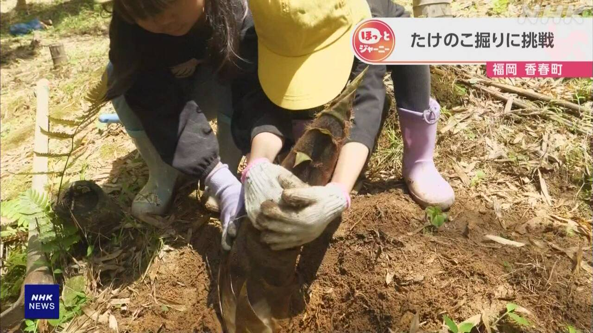

最新ニュース
1️⃣ 岩手県の火事「火がこれ以上大きくならないようにしたい」
岩手県大槌町の山で火事が起こって7日目です。
大槌町では、27日に続いて28日も雨が降りました。火は前より弱くなっています。
しかし、山にはまだ熱いところが残っていて、また火が出る心配があります。このため、28日も消防など1000人以上の人が出て、水や薬をかけました。火がこれ以上大きくならないようにしようとしています。
気象台によると、29日も雨が降りそうです。
大槌町の町長は「避難している人は疲れていると思います。早く家に帰ることができるようにしたいですが、火事の様子をよく見て決めたい」と話しました。
2️⃣ 国連で原爆が落ちたあとの広島・長崎の写真などを展示
ニューヨークの国連で、27日からNPTの会議が始まりました。会議は、世界の核兵器を少なくするために5年に1回開いています。
その国連のロビーに今、日本被団協などが、原爆で被害を受けた広島や長崎の写真などを並べています。原爆で溶けたガラスなどもあります。原爆のこわくてひどい様子を伝えています。
写真を見たスイスの大学生は「悲しくて胸が痛くなりました。とても辛いです」と話しました。フランスの女性は「NPTの会議で、核兵器を使わないための話し合いが進むことを願っています」と話しました。
3️⃣ りくりゅうペア「持っている力を全部出しました」
フィギュアスケートの「りくりゅう」ペアが、28日選手をやめる理由などを記者たちに話しました。
「りくりゅう」ペアは、三浦璃来選手と木原龍一選手の2人です。
2人は、ミラノ・コルティナオリンピックで金メダルを取りました。日本のペアで初めてでした。
28日、三浦選手は「持っている力をオリンピックで全部出しました」と話しました。
木原選手は「三浦選手と出会うことができて感謝しています」と話しました。
2人は、これからプロになる予定です。
「たくさんの人にペアの技をみてもらって競技のことを知ってほしい」と言っています。
4️⃣ 福岡県 子どもたちが土の中から「たけのこ」を掘った

春になると、竹の林の土から「たけのこ」が出てきます。
たけのこは、ごはんに入れたり焼いたりして食べます。
福岡県香春町の林で、27日子どもたち10人ぐらいが、土の中からたけのこを掘って出しました。
たけのこを見つけると、どうやって掘るか教えてもらって、たくさん取りました。
大きいたけのこを掘った子どもは、両手で持って喜んでいました。
子どもたちはみんな「楽しかったです」とか「重かったです」などと話していました。
- 〜より
- 〜ている / 〜でいる
- 〜がある / 〜がいる
- 〜ところ
- 〜ため
- 〜など
- 〜以上
- 〜ようにする
- 〜としている
- 〜ように
- 〜ならない
- 〜として
- 〜そうだ
- 〜によると
- 〜と思う
- 〜ことができる
- 〜こと
- 〜から
- 〜ため(に)
- 〜や〜など
- 〜ても / 〜でも
- 〜になる
- 〜予定
- 〜予定だ
- 〜てもらう / 〜でもらう
- 〜たり〜たりする
- 〜くらい / 〜ぐらい
- 〜中
vebaev.github.io
Generated: 2026-04-30 09:12:38 UTC